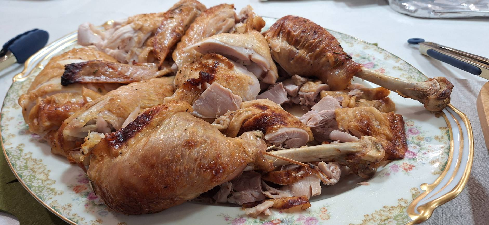

Brined Turkey

Ingredients
- 450 g kosher salt
- 100 g sugar
- 3 tbs minced garlic
- 1 tbs black pepper
- 60 ml Worcestershire sauce
- 7.5 l cold water
Directions
- Brine: Dissolve salt and sugar in water and brine a 12-lb turkey for 4-6 hours.
- Dry: Rinse, pat dry, and refrigerate uncovered on a wire rack 8-24 hours.
- Roast (Breast-Down): Brush breast with 2 tbs melted butter. Place turkey breast-side down in a foil-lined V-rack with vent holes. Roast at 400°F for 45 minutes, brushing bottom with 2 tbs butter.
- Flip & Finish: Flip turkey and return to oven for 50-60 minutes.
- Check Doneness: Breast 165°F, thigh 175°F.
- Rest: Let rest 30 minutes before carving.
The Gumbo Page
Michael Fritsche
mbf@fritsche.org